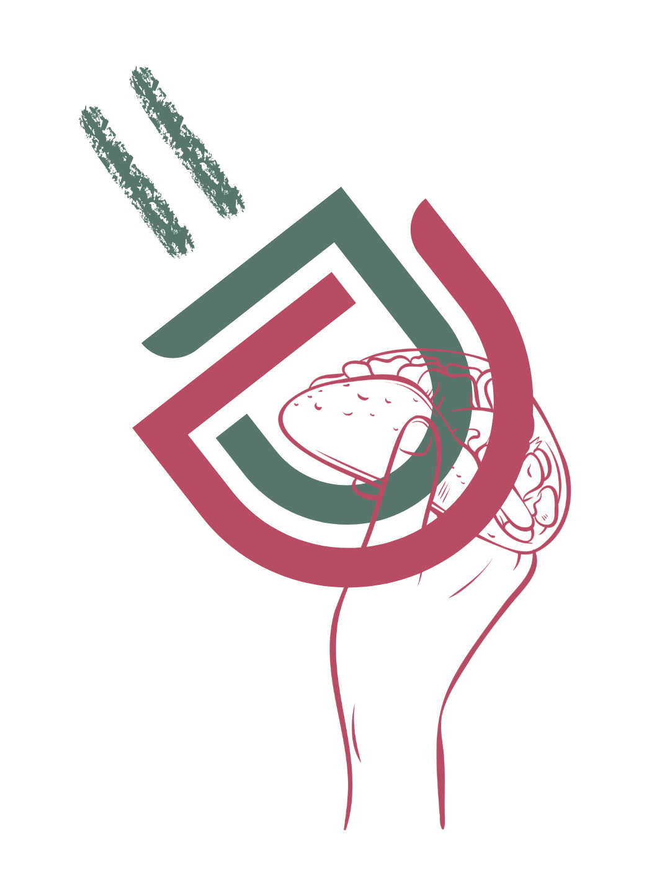

Investigador UAM Xochimilco
Jose Luis Murguía | Economista & Data Scientist
Carta 6 • Agosto
Geopolítica: China vs EE.UU.
¿América Latina como simple tablero de ajedrez? El Dr. Tzili advierte sobre el riesgo de una nueva "dependencia periférica" y urge a aprovechar estratégicamente el nearshoring.
Visualizar
Brechas de Desigualdad
Desarrollo económico real. Explora cómo se marcan las diferencias y contrasta la vida en el Sur Global vs Norte Global.
🟣 🧮 Calculadora Paramétrica 5=D
Ingeniería de menús & Food Cost (Gratis)
🟣 🗺 Georacle MVP
Inteligencia Espacial & Expansión